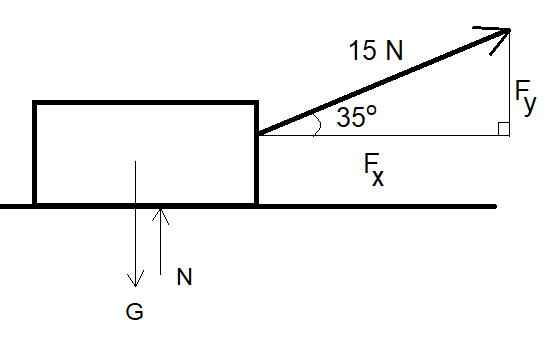
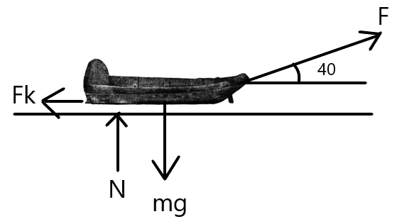

Newtonin lait
Contents
Newtonin lait¶
Edellisessä luvussa opittiin laskemaan eri voimista muodostuva kokonaisvoima. Kokonaisvoiman suunta ja suuruus määräävät yhdessä Newtonin lakien kanssa, mitä kappaleelle tapahtuu: pysyykö se paikallaan tai jatkaako liikkumasta entisellä nopeudellaan, lähteekö se liikkeelle, tai hidastuuko se liike. Newtonin kolme lakia ovat peräisin 1600-luvulta. Edelleen näitä lakeja tarvitaan, jos halutaan esimerkiksi avaruusraketit menemään oikeaan paikkaan.
Newtonin 1. laki: jatkavuuden laki¶
“Jos kappaleeseen ei kohdistu voimia tai jos siihen kohdistuva kokonaisvoima on 0, niin kappale pysyy paikallaan tai jatkaa suoraviivaista liikettä tasaisella nopeudella.”
Newtonin 1. lain toinen nimi, jatkavuuden laki, kertoo että jos kappaleen ei kohdistu voimia, niin se jatkaa sitä, mitä se oli alunperinkin tekemässä. Jos kappale oli paikallaan, se pysyy paikallaan. Jos kappale oli liikkeessä, se jatkaa liikkumista. Käytännössä tämä voisi tarkoittaa monenlaisia asioita:
jalkapallokentällä maassa paikallaan oleva pallo liikkeelle vasta, kun sitä potkaistaan
liukkaalla jäällä liikkeessä oleva jääkiekko pysähtyy vasta, kun se törmää kaukalon laitaan
auton tehdessä äkkijarrutuksen takaikkunalla oleva esine jatkaa liikkumista samalla nopeudella kuin auto liikkui
Newtonin 1. lakia voidaan soveltaa ikään kuin takaperin: jos tiedetään, että kappale on paikallaan tai liikkuu tasaisella nopeudella, niin voidaan päätellä että kokonaisvoiman pitää olla nolla. Tällöin voidaan laskea, millaisia voimia kappaleeseen vaikuttaa.
Esim. Vedetään 10 kg laatikkoa 15 N voimalla etuviistoon 35 asteen kulmassa. Kuinka suurella voimalla \(N\) alusta tukee laatikkoa?

Ratkaisu
Voiman komponentit ovat \(F_x=15~\text{N}\cdot\cos{35^{\circ}}=12.3~\text{N}\) ja \(F_x=15~\text{N}\cdot\sin{35^{\circ}}=8.6~\text{N}\).
Tukivoima ei nyt ole yhtä suuri kuin painovoima, sillä osa vetävästä voimasta suuntautuu ylöspäin, ja tällöin alustan ei tarvitse tukea laatikkoa yhtä suurella voimalla kuin ilman vetävää voimaa. Kappaleen tiedetään - tai ainakin oletetaan - olevan pystysuunnassa paikallaan. Newtonin 1. lain mukaisesti pystysuuntaisten voimien summan pitää silloin olla nolla, joten kirjoitetaan yhtälö ja ratkaistaan tukivoima \(N\):
\(F_y+N-G=0\)
\(N=G-F_y\)
\(N=mg-F_y\)
\(N=10~\text{kg}\cdot 9.81~\frac{\text{m}}{\text{s}^2}-8.6~\text{N}=89.5~\text{N}\)
\(N=98.1~\text{N}-8.6~\text{N}=89.5~\text{N}\)
Esim. Kitkavoiman suuruus \(F_{\mu}\) riippuu kitkakertoimesta µ ja tukivoimasta \(N\) seuraavasti: \(F_{\mu}=µN\). Pulkkaa, jonka massa on 20 kg, vedetään tasaisella tiellä siten, että kulma narun ja tien välillä on 40 astetta. Kitkakerroin on \(\mu=0.58\). Kuinka suurella voimalla \(F\) pulkkaa pitää vetää, jotta se kulkee tasaisella nopeudella?

Ratkaisu
Kirjoitetaan erikseen kokonaisvoima vaaka- ja pystysuunnassa. Kummankin pitää olla 0.
Vaakasuunta:
\(F_x - F_{\mu}=0\)
\(F \cos{40^{\circ}} - \mu N =0 \)
\(F \cos{40^{\circ}} - 0.58 N =0 \)
Pystysuunta:
\(F_y - G + N =0\)
\(F \sin{40^{\circ}} - mg + N = 0\)
\(F \sin{40^{\circ}} - 20~\text{kg} \cdot 9.81~\frac{\text{m}}{\text{s}^2} + N = 0\)
Tuloksena on yhtälöpari, jonka kummassakin yhtälössä esiintyvät molemmat tuntemattomat \(F\) ja \(N\). Ratkaisu onnistuu esimerkiksi WolframAlphalla:
solve F*cos(40)-0.58*N=0, F*sin(40)-20*9.81+N=0
Tulokseksi saadaan \(F=100~\text{N}\) ja \(N=132~\text{N}\).
Newtonin 2. laki: dynamiikan peruslaki¶
“Jos kappaleeseen vaikuttava kokonaisvoima on \(F\), niin kappale, jonka massa on \(m\), saa kiihtyvyyden \(a\), jonka suuruus saadaan yhtälöstä \(F=ma\)”.
Kokemusperäisesti on selvää, että esimerkiksi painavat ostoskärryt kaupassa on hankalampi saada työnnettyä liikkeelle kuin kevyet. Siis mitä suurempi on massa, sitä pienempi on kiihtyvyys, ja toisin päin.
Esim. Ratkaistaan Newtonin 2. laista eri suureita liittyen peräkärryn vetämiseen:
a) Kuinka suurella voimalla on vedettävä 1000 kg massaista vaunua, jos sille halutaan kiihtyvyys 3.0 \(\frac{\text{m}}{\text{s}^2}\)?
b) Kuinka suuren kiihtyvyyden saa 250 kg peräkärry, kun sitä vedetään voimalla 1 kN?
c) Kuinka suuri voi olla kuorma, kun vetävän auton voima on 2000 N ja kiihtyvyyden pitää olla 4 \(\frac{\text{m}}{\text{s}^2}\)?
Ratkaisu
a) Sijoitetaan luvut suoraan Newtonin 2. lakiin:
\(F=1000~\text{kg} \cdot 3.0 \frac{\text{m}}{\text{s}^2} = 3000~\text{N}\)
b) Ratkaistaan Newtonin 2. laista kiihtyvyys ja sijoitetaan luvut:
\(a=\frac{F}{m}= \frac{1000~\text{N}}{250~text{kg}}=4.0 \frac{\text{m}}{\text{s}^2}\)
c) Ratkaistaan Newtonin 2. laista massa ja sijoitetaan luvut:
\(m=\frac{F}{a}= \frac{2000~\text{N}}{4~\frac{\text{m}}{\text{s}^2}} = 500~\text{kg}\)
Newtonin 2. lakia tarvitaan usein myös tilanteissa, joissa jokin esine on liukumassa kaltevalla tasolla tai putoamassa. Esimerkiksi kun omena putoaa, siihen vaikuttaa painovoima alaspäin, mutta myös hyvin vähäinen ilmanvastus ylöspäin. Ilmanvastus ei riitä kumoamaan painovoimaa, joten pystysuuntaisten voimien summa ei ole nolla. Siksi omena putoaa kiihtyvällä nopeudella. Vastaavasti jos auto on liikkumassa alamäkeen ja jarruttaa, niin kokonaisvoima muodostuu mäkeä alas suuntautuvasta painovoimasta ja sille vastakkaisesta kitkavoimasta. Tällöin kiihtyvyys saa eri arvon kuin silloin, kun auto jarruttaa tasaisella tai ylämäessä. Tällaisiin ongelmiin palataan kappaleessa “Dynamiikkaa”.
Newtonin 3. laki: voiman ja vastavoiman laki:¶
“Jos kappale A kohdistaa kappaleeseen B voiman, jonka suuruus on \(F\), niin kappale B kohdistaa kappaleeseen A yhtä suuren, mutta vastakkaissuuntaisen voiman \(–F\).”
Esimerkiksi kun hyttynen osuu liikkuvan auton tuulilasiin, niin törmäyksestä hyttyseen ja autoon kohdistuvat voimat ovat yhtä suuret. Selitys sille, miksi hyttysen liike loppuu kuin seinään ja se jopa liiskaantuu, mutta autolle ei tapahdu juuri mitään, löytyy Newtonin 2. laista. Hyttynen saa suuren kiihtyvyyden, koska sen massa on hyvin pieni, kun taas auto saa aivan mitättömän pienen kiihtyvyyden, jota ei kuski huomaakaan. Lain todenperäisyyden huomaat myös, kun vaikkapa nojaat seinään - seinä työntää sinua yhtä suurella voimalla kuin sinä työnnät seinää.
Newtonin 3. lakia tarvitaan harvemmin laskuissa. Siihen palataan törmäyslaskujen yhteydessä, osana liikemäärän säilymislain johtamista.